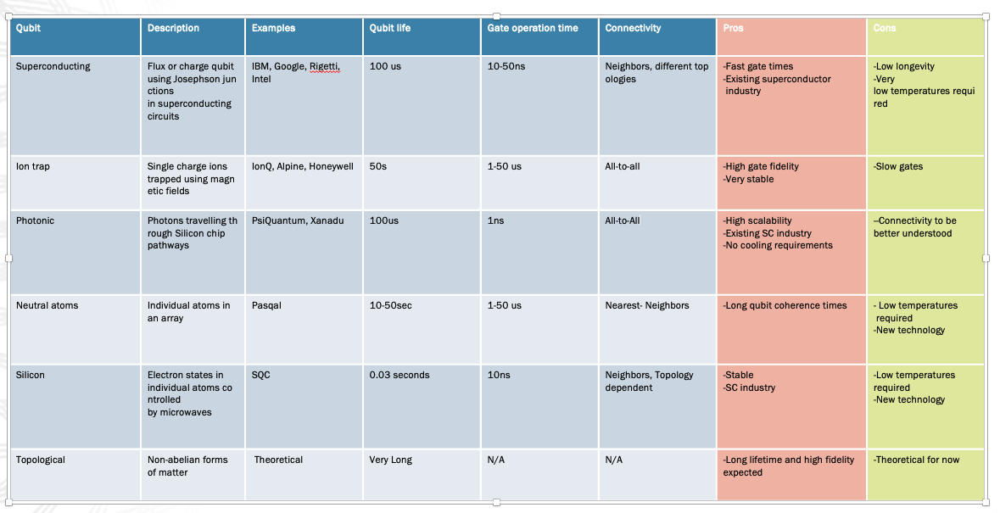
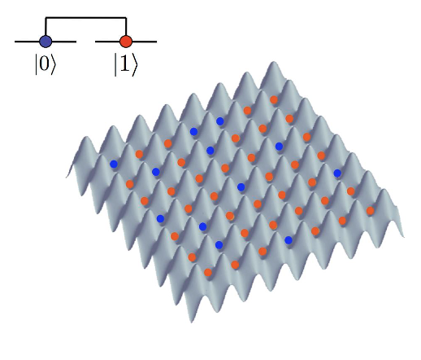

Lecture 6: Realizing Quantum Computing Systems#
Warning
These lecture notes are a work in progress and are not a replacement for watching the lecture video, it’s intended to be a supplementary reading after watching the lecture
Learning Outcomes
Discuss the types of Quantum Computing Hardware and the Physical components that they are made up of as well as the guiding principle behind their operation.
This leads us into a discussion into the various engineering challenges in building Quantum Computing systems and what techniques and mechaisms need to be used to tackle said challenges
We also breifly look into the Roadmaps of Quantum Hardware Companies to identify critical milestones in the path towards Universal Quantum Computing.
Why do we need Quantum Computing?#
First let us answer the question of Why we need quantum computers, There are broadly two reasons why Quantum Computing promises to be useful to us in the future of computing.
The first reason is that there exist a class of problems which are very difficult to solve on Classical Computers but can be efficiently calculated on a Quantum Computer. These include certain Optimization problems, Chemical Simulations and some search problems, Quantum computers can theoretically solve these problems in exponentially fewer computational steps in comparison to their classical counterpart.
Secondly, Classical computers and processors are getting smaller as observed by the Moore’s law, which was introduced in the previous module, the Quantum effects within the Hardware start becoming more apparent the Quantum Interactions between the individual bits start affecting the information stored in the system and therefore it is important to understand Quantum Phenomenon to build better Classical Processors in the future.
Qubits#
A new paradigm for computation#
Qubits are the fundamental unit of information in Quantum Computing systems they play a role similar to that of bits in Classical Computing. However, there are some key differences between the properties of Bits and Qubits. Bits always correspond to distinct energy values or levels whereas Qubits do not possess a definite energy value until they are measured before which they exist in a superposition of states, this superposition allows us to process multiple states in a single round of computation which is one of the key sources of speedup in Quantum Computing systems. Let us look at some other Quantum Properties which make Quantum systems different from their Classical counterparts
Quantum Properties#
Superposition : It is the ability for a Quantum Particle to exist in a state which has probability of being measured in either of the basis states which are labelled as 0 or 1.In the previous module we showed light polarized in the + state is measured as 0 or 1 with equal probability, this state is an equal superposition of both the basis states.
Entanglement : A8 feature of Quantum particles which allows us to interact them in a way such that the measurement on one particle influences the state of the other particle, Classically, this would be equivalent to there being 2 coins such that when you flip one coin as heads the other automatically also goes to the state heads. Entanglement is leveraged specifically for Quantum Communication and Crytography.
Tunneling : Particles are able to cross over a potential barrier even when it would seem to not posses enough energy to do so, this would classically correspond to rolling a ball up a hill with not enough energy to cross the peak but there being a finite probability of finding the ball on the other side of the hill. We use this phenomenon in certain `Quantum Computing systems especially Quantum Annealing which we will discuss in a section ahead
Classical vs Quantum Logic#
Similar to how Classical Gates are used to build Classical Computing operations we have a set of Quantum Gate operations which take a qubit or a set of qubits as input and returns a modified version of the state as output. In the previous lecture we discussed the existence of Universal Gate set which means that there always exists is a set of gates that can be used to construct any logical operation that we require, the Pauli operations along with the CNOT gate is one example of such a gate set.
All Quantum gates are required to be reversible in nature which means that there always exists an operation which can reverse the action of a previous gate or a set of gates. This, is however not true for the Quantum Measurement operation which was introduced in the provious module, this operation measures a Quantum state and returns a Classical measurement value as it’s outcome while also collapsing the qubit to the corresponding Quantum state, thisoperation is not reversible and the state that existed before the measurement cannot be recovered. There are several properties of Qubit that you could measure. All Quantum gates are required to be reversible in nature which means that there always exists an operation which can reverse the action of a previous gate or a set of gates.

Quantum Circuits#
A sequence of Quantum Gates and Operations in a particular order is known as a Quantum Circuit, Quantum Circuits are different from Classical circuits in a few key ways. Quantum Circuits are made up of Quantum Gates, Operations and Measurements, There are also extra qubits which are added to the system called Auxillary Qubits which are sometimes required for operations of the algorithms and are also required for Error Correction, we will discuss Error Correction in more detail later in this lecture. Furthermore, unlike Classical Circuits in which a gate can be applied between any two bits, Quantum Hardware often restricts the connections that can be made between qubits, in most systems only neighboring qubits of the system can be operated on using gates. The underlying connectivity of the physical qubits is known as topology, since topology gives us an idea of the allowed interactions within a Quantum Circuit it needs to be taken into consideration while building efficient Quantum Circuits
Quantum Computation Workflow#
Let’s take a look at how the workflow of a Quantum Computation is different from the Classical Computation we’re familiar with, In the classical workflow we get the data from the given problem statement which acts as the input to the Classical algorithm which gives us the required output.
Classical Computational Workflow
graph LR
A1{"Classical
Problem Statement"}
A2(["Classical
Dataset"])
A3(["Classical
Algorithm"])
A4{Output}
A1 ==> A2 ==> A3 ==> A4
style A1 fill:#ccf,stroke:#333,stroke-width:3px
style A2 fill:#ccf,stroke:#333,stroke-width:3px
style A3 fill:#ccf,stroke:#333,stroke-width:3px
style A4 fill:#cfc,stroke:#333,stroke-width:3px
Quantum Computational Workflow
graph LR
B1{"Classical
Problem Statement"}
B2(["Classical
Dataset"])
B3(["Quantum
States"])
B4(["Quantum
Algorithm"])
B5(["Quantum
Circuit"])
B6{Output}
B1 ==> B2 =="Data
Encoding"==> B3 ==> B4 =="Circuit
Compilation"==> B5 ==> B6
style B1 fill:#ccf,stroke:#333,stroke-width:3px
style B2 fill:#ccf,stroke:#333,stroke-width:3px
style B3 fill:#fcc,stroke:#333,stroke-width:3px
style B4 fill:#fcc,stroke:#333,stroke-width:3px
style B5 fill:#fcc,stroke:#333,stroke-width:3px
style B6 fill:#cfc,stroke:#333,stroke-width:3px
The Quantum version of the workflow follows a similar set of steps with a few additional Quantum specific operations in the middle, The first step of generating data from the Classical Problem statement remains the same, however this classical data cannot directly be input into a Quantum Algorithm it needs to be converted into a set of Quantum states this process of conversion of Classical data into a set of input Quantum States is known as Data Encoding, the type of data encoding often depends on the type of quantum Algorithm we choose, we can store multiple copies of these intial Quantum states in a Quantum memory so that we don’t require to reinitialize the input state each time we want to run the circuit, these input states are provided to the Quantum algorithm, Quantum Computers can physically be implemented using various different architectures which we will discuss in the coming few slides, based on the type of Computing architecture we’re working on the abstract Quantum Algorithm needs to be compiled into a physical Quantum circuit which is then implemented on the hardware, the ouput from the Quantumm circuit often requires a certain amount of Classical post processing to get the required output.
Building Quantum Computers#
Broadly, the Quantum Computing systems that are being developed today can be classified into two categories Circuit Based or Gate Based devices and Analog Quantum Simulation, there are further segregation within each of these types which we’ll delve into in the upcoming slides, we have also shown some of the industry providers who are working towards building each of these types of hardware.
Circuit-Based/ Gate-Based
IBM (Superconducting Qubits)
IONQ (Ion-trapped Qubits)
Xanadu (Photonics)
Quantum Analog Computers
Quantum Array Simulators
QuEra (Neutral Atom Array)
Pasqal (Neutral Atom Array)
Quantum Annealing
Dwave (Superconducting Qubit Array)
%%{init: {'theme':'base', 'fontSize': '10', 'securityLevel': "loose"}}%%
mindmap
root("**Types of Quantum Computing**")
qcg("**Circuit/Gate Based**")
("IBM (Superconducting Qubits)")
("IONQ (Ion-trapped Qubits)")
("Xanadu (Photonics)")
qac("**Quantum Analog Computers**")
("Quantum Array Simulators")
("QuEra (Neutral Atom Array)")
("Pasqal (Neutral Atom Array)")
("Quantum Annealing")
("Dwave (Superconducting Qubit Array)")
Circuit-based Quantum Computing#
Circuit Based Quantum Computing refers to the model of hardware in which complex Quantum operations are built by combining and using a primitive set of Quantum gates, most of our discussion upto this point has been oriented towards this model of computing, There are different physical mechanisms to implement qubits as well as the gate operations to build the circuits.
Let us go through some of these architectures and how they implement Qubits and the Quantum operations :
Superconducting loops: Also known as Transmon Qubits use electronic circuits consisting of superconducting elements and Josephson junctions and are controlled using microwave pulses which controls the phase of the qubits
Trapped Ion : Computers use Ions or charged particles which are suspended in free space as the qubits and uses Lasers to drive the computation by performing gates
Photonics, Diamond Vacancies, Silicon Quantum Dots and Topological qubits are some other architectures which are also currently being worked on. Each technology comes with it’s share of advantages in terms of Scalability, Operation temperature and Coherence times and therefore each of them are ideal for different use cases and applications.
Superconducting Qubits#
A Superconductor is a special type of material that has zero electrical resistance. The qubits are implemented using superconducting loops and circuits. Here, the two states are not |0> and |1> but the ground and excited states respectively, and are denoted by |g> and |e> respectively.
There are many different types of superconductors
Transmon Qubits: Transmons are a widely used type of superconducting qubits. They are based on a nonlinear oscillator design and can have longer coherence times (the time during which quantum information is preserved) compared to some other qubit types.
Xmon Qubits: Xmons are a variation of transmon qubits designed with a different geometry that improves qubit-qubit connectivity, making them suitable for building larger quantum processors.
Flux Qubits: Flux qubits use the superconducting properties of Josephson junctions to encode quantum information. They can have strong interactions with other qubits, which is useful for certain quantum operations.
Trapped-Ion Qubits#
Here, ions are trapped in electromagnetic fields. The qubits are usually encoded in the internal state of individual atoms. From these ions, there are 2 types of qubits which we can form
Hyperfine qubits: The energy level of both ions is degenerate which in simple terms means they are the same
Optical qubits: Formed by one ground state and one excited state of two ions respectively. Lasers are used for manipulation of the qubits like performing entanglement, gate operations, etc.
Neutral Atom Qubits#
Parallel to trapped ions, here, we have neutral atoms which are trapped inside the electromagnetic field. There are different trapping techniques such as the optical trap, magnetic trap, magneto-optical trap, etc. The qubits are encoded in the internal state of the individual atoms. Lasers are used for the manipulation of the qubits and also for gate operations.
Quantum Dot Qubits#
Quantum Dots are tiny semiconductor nanocrystals that can trap individual electrons or other charge carriers. The qubit state depends on the individual electrons trapped inside the dot and the state is represented by its spin. The manipulation of these qubits is done by microwave pulses or by applying electric or magnetic fields externally.
Photonics Qubits#
Here we use photons as qubits and thus are also known as photonic qubits. The quantum state can be polarization, frequency, or phases of the qubits. the superposition and entanglement are created using wave plates whereas the qubit manipulation is done by optical instruments like beam splitter, phase shifters, etc. For gate implementation, normal quantum gates are used.
Color center qubits#
Color centers are defects in the solid state. Defects result from missing or substituted atoms in the crystal lattice. The qubits are embedded into these defects. The quantum states of color centers are often encoded in their electronic and nuclear spin states. The ground and excited states of color centers can be used to represent qubit states. The qubits are manipulated using laser lights to create superposition and entanglement.
NMR based qubits#
These use the principles of NMR(Nuclear Magnetic Resonance) for quantum computation. NMR is a phenomenon that occurs when the nuclei of certain atoms, such as hydrogen, respond to a magnetic field by emitting or absorbing radiofrequency electromagnetic radiation. Here, qubits are typically encoded in the nuclear spins of certain atoms in a molecule. The manipulation is done using radiofrequency pulses.
Topological qubits#
Electron-on-Helium#
Electrons are trapped on the surface of Superfluid helium and serve as qubits. Superfluid helium is a state of helium that exhibits unique properties due to its extremely low temperature. It lacks viscosity and can flow without friction. On the surface of superfluid helium, a two-dimensional layer forms, creating a quantum well where electrons can be trapped. This confines the electron and keeps the electron localized in a small region and allows for precise control over its quantum properties. Manipulations are done by external magnetic and electric fields.
Performance Metrics for Qubits#
Mentioned below are some of the key metrics used to determine the performance of a Qubit based system
Scalability refers to the maximum number of qubits that can be operated by a given Quantum system, more qubits usually refers to a greater amount of computational power although the fidelity/ coherence time of the qubit also plays an important role in determining which system is stronger.
Operating temperature is the temperature at which we need to maintain the Quantum system for it to operate effectively, Quantum systems usually need to be maintained at very cool temperature to avoid interaction with the environment leading to noise in the system, we will talk about noise and it’s impact on Quantum systems further ahead in the lecture.
Coherence times refers to how long a qubit can maintain a state it is initialized in before becoming corrupted by the noise in the system, Coherence times allows us to estimate what time scales we need our Quantum Algorithms to be within since if they are much greater than the coherence time then their outputs would be corrupted by environmental noise.
Fidelity is a measure of how close the actual quantum state within the system is in comparison to the theoretical state we’re aiming for
Gate Operation times tells us how long it takes for single gate operations on a given Qubit in the system, smaller gate times refers to faster application of gates on the circuit and outputs which are less influenced by the effects of decoherence.
All these metrics together determine the performance of the qubits, Scientists are working towards building a more composite metric such as Quantum Volume which provides information about more than just one of these categories.
Analog Quantum Simulators#
The second type of Quantum Computing systems are known as Analog Quantum Simulators unlike the Gate Based model, which use discrete operations called gates to implement operations on the qubits,These systems use the continuous time evolution of a Quantum systems to perform the required Quantum Operations. The systems in considerations are usually lattice based systems since they are particularly useful in encoding Combinatorial problems. Let us look at the two types of Analog Quantum Simulators on offer namely :
Array based Quantum Analog computers
Quantum Annealers
Array based Quantum Simulators#
Array based Quantum Simulators are built by arranging neutral atoms in an array and controlling them with the help of lasers, the lasers are tuned to change the environment within which the atoms are allowed to evolve which allows us to perform various Quantum Operations on the system, Array based simulators are particularly useful for Quantum Simulation tasks since in real world situations the interactions that exist between Quantum systems are not restricted to 1 qubit or 2 qubit gates although it’s always theoretically possible to simulate a more complex multi qubit interaction by breaking it into several single and 2 qubit gates on a Gate based Computer this can often be a challenging task in practice, array based simulators on the other hand allow you to implement the interactions directly without having to break it down into it’s components.
Quantum Annealers#
Quantum Annealers are designed and built to tackle Combinatorial Optimization problems they also usually have an array based structure, let’s say you are given a certain optimization task, Your first step would be to formulate the problem in terms of a set of equations with a given set of variables, next you would attempt to convert the set of equations into a corresponding graph problem, you would then map the Graph problem onto the Quantum Annealer and let the system evolve slowly which is called Adiabtic evolution until it reaches a stable point, this stable point corresponds to the minima of your function, The Quantum Tunneling effect we introduced earlier provides additional speedup in this process.
Challenges in building Quantum Computers#
There are two key challenges for building Quantum Computers
Noise : The qubits interact with environment and other qubits in the system which causes error in Quantum operations as well as state preparation.
Scalability: There are several technological challenges in implementing a large number of usable Qubits on the same physical device.
To achieve Scalable Quantum Computing we require the following specifications : Qubit Error Rates 10^(−10) per operation Number of qubits ~ 1 million Quantum Memory
Let us now look at some of the mechanisms Scientists and Engineers apply to improve the operation of their systems namely, Improving Temperture Control, Error Correction & Mitigation and QRAM
Temperature control#
Refrigeration of Quantum Computers is one of the key mechanisms employed to tackle the Quantum noise, the amount of environmental interaction and crosstalk that occurs in a Quantum system is directly proportional to the Temperature of the system, the Qubits, Quantum Gates and Measuring apparatus is typically stored within a refrigeration enclosure shielded from the effects of Enivronmental noise, optimal and low cost refrigeration is very important to the development of Quantum computers.
Most Quantum systems operate in the temperature range from a few mK to a few Kelvin, although as we discussed earlier, the Operating temperature is dependent on what type of Qubit technology you are dealing with, there are certain technologies which do not require extensive refrigeration and can operate at room temperatures
Engineers employ techniques such Helium 3/Helium4 dilution and Laser Doppler cooling to keep the Quantum systems cold and minimize the effect of noise
Error Correction & Mitigation#
Despite the refrigeration ,Quantum noise manages to creep into the systems Scientists take inspiration from Classical computing to develop a technique known as Quantum Error correction. They are fundamentally broken down into two categories, 1) Hardware Based Error Correction Schemes and Software based error mitigation schemes, However, there are some additional complexities that need to be taken care of when building Quantum Error correcting schemes in comparison to their classical counterparts, Unlike Classical schemes where you can measure the bits to fix the error in them we cannot do the same with Qubitss since it will lead to the superposition collapsing, due to complexity Quantum Error schemes can be broken down into two parts, the first step is detection in which we identify whether an error has occurred without actually measuring the qubits and then the error elimination step which fixes the identified error. ** The Error correction schemes allow us to detect and eliminate the errors that have occurred on the system by introducing redundancy in the system, this would imply that we are encoding or storing the information of a single qubit into multiple qubits so that even if there is noise that impacts some of the qubits we are still able to the recover the initial information from the rest of the system, clearly these are changes that need to be made at a hardware level and additional redundancy qubits will be required to be added to the system.
Error mitigation schemes are software Post-processing techniques that try to mitigate the level of noise by using mathematical modelling and regression to extrapolate from the results what the outcomes of the system would have been under ideal conditions without the existence of noise.
Quantum RAM#
As discussed in the Quantum Workflow it can be useful to have a Quantum Memory to avoid the process of reinitializing the state each time we want to run the circuit, because of the probabilistic nature of Quantum operations very often we may have to run the circuit multiple times and being able to load states from a Quantum Memory would help us speed up certain Quantum Algorithms. However,as discussed in the previous section, the influence of noise on the circuit makes it very difficult to implement a stable Quantum Memory, breakthroughs in the development of Quantum memory will severely improve the time it takes to perform Quantum Algorithms however physical implementations are still at a very nascent stage.
Quantum Roadmap#
Scaling Quantum hardware#
This roadmap shows some of the key milestones we are working towards while building Quantum Computers, we are currently at the dot on the top left of the graph in a phase called Noisy Intermediate Scale Quantum Computing or NISQ for short, Solutions in the domains of Quantum Chemistry, Optimization problems and for Machine learning which use noise resistant algorithms are currently being explored As we improve the systems with the various technologies we just mentioned we will start moving towards towards the bottom right portion of the graph with more qubits and lower error rates until we reach the second red dot which is called the Fault-Tolerant threshold this paradigm will expand the prospective use cases and application of Quantum Computers.